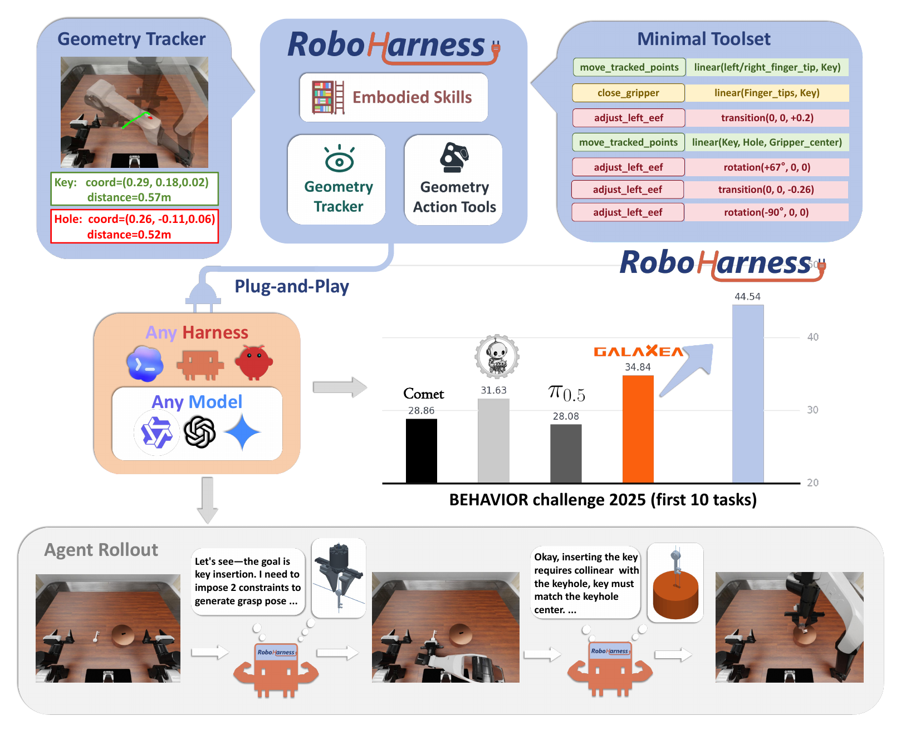
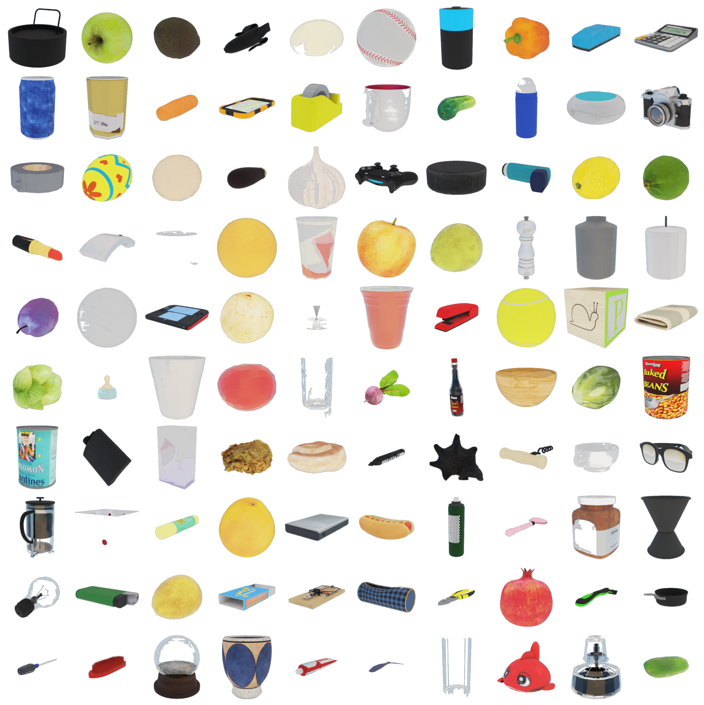
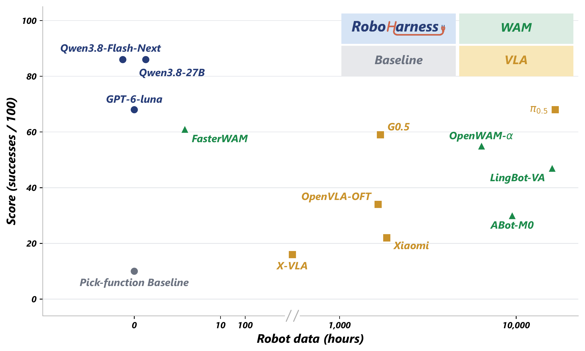

Turning On Radio
Official instruction ↗Turn on the radio receiver that's on the table in the living room.
Video could not load. Open the video ↗
0.4000Mean Q-score
Q-score by instance
Head camera · Instance 307Recorded Q 1.0000
Generalist mobile manipulation with coding agents.

The rise of large language models (LLMs) has opened a path toward generalist embodied AI, raising the question of how LLMs can act in the physical world. One straightforward approach is training the model to generate actions: collect robot-action data and video demonstration, refine LLM architecture with an action head, and train a vision-language-action (VLA) model at scale.
However, we argue that coding agents have the potential to realize generalist embodied manipulation. All they need is a simple yet effective robot harness. We present RoboHarness: a robotic harness that gives LLM agents a visual-geometric control panel so that they can directly understand and invoke embodied tasks. With RoboHarness, Qwen3.8-Flash-Next outperforms state-of-the-art VLA models on BEHAVIOR Challenge 2025 tasks. The implementation is open source.
Qwen3.8-Flash-Next · mean Q-score over five instances.
Turn on the radio receiver that's on the table in the living room.
Video could not load. Open the video ↗
Q-score by instance
Put the three cans of soda from the living room inside the trash can in the kitchen.
Video could not load. Open the video ↗
Q-score by instance
Place each of the two pumpkins and all three candles from the living room inside a cabinet in the living room (use any cabinet), then make sure every cabinet is closed, and position the cauldron so it is next to a table in the living room.
Video could not load. Open the video ↗
Q-score by instance
From the breakfast table in the kitchen, move both pizzas - keeping each on its plate - into the same refrigerator, put both bowls into one sink, and make sure the refrigerator is closed.
Video could not load. Open the video ↗
Q-score by instance
Take the four mousetraps from the cabinet in the bathroom and place them on the bathroom floor. Make sure all four end up on the same floor surface, and ensure that at least two of them are either under or directly next to the same bathroom sink.
Video could not load. Open the video ↗
Q-score by instance
Take the three Easter eggs out of the wicker basket on the lawn in the garden, then place them on the lawn next to a single tree (choose any tree) so that all three eggs are next to the same tree and none are left in the basket.
Video could not load. Open the video ↗
Q-score by instance
Put all the toys in the child's room - the three board games (two on the bed and one on the table), the two jigsaw puzzles on the table, and the tennis ball on the table - inside the toy box on the table in the child's room.
Video could not load. Open the video ↗
Q-score by instance
Move the toaster, food processor, and French press from the kitchen countertop into the same kitchen cabinet, and make sure that cabinet is closed at the end.
Video could not load. Open the video ↗
Q-score by instance
In the living room, take the wreath, three candy canes, and two pillar candles out of the wicker basket. Place the wreath and two of the candy canes on the same living-room sofa. Put the remaining candy cane on top of a dining-room table. Put both pillar candles together on top of one dining-room table (they can share the same table). Finally, place all three gift boxes under or right next to the Christmas tree in the living room.
Head-camera recording unavailable.
Q-score by instance
| Task | 301 | 304 | 306 | 308 | 310 | Mean Q |
|---|---|---|---|---|---|---|
| Turning on radio | 0.0000 | 0.0000 | 0.0000 | 1.0000 | 1.0000 | 0.4000 |
| Picking up trash | 1.0000 | 0.3333 | 1.0000 | 1.0000 | 1.0000 | 0.8667 |
| Putting away halloween decorations | 0.5714 | 0.7143 | 0.4286 | 0.7143 | 1.0000 | 0.6857 |
| Cleaning up plates and food | 0.2857 | 0.2857 | 0.2857 | 0.1429 | 0.2857 | 0.2571 |
| Setting mousetraps | 1.0000 | 1.0000 | 0.5000 | 1.0000 | 0.6667 | 0.8333 |
| Hiding easter eggs | 1.0000 | 0.0000 | 0.7778 | 0.3333 | 0.0000 | 0.4222 |
| Picking up toys | 0.0000 | 0.6667 | 0.5000 | 0.6667 | 0.0000 | 0.3667 |
| Rearranging kitchen furniture | 0.2500 | 0.5000 | 0.2500 | 0.5000 | 0.5000 | 0.4000 |
| Putting up christmas decorations inside | 0.3333 | 0.2222 | 0.3333 | 0.1111 | 0.1111 | 0.2222 |
BEHAVIOR Challenge 2025, with twice the challenge step budget. Task04 has no supplied archive. For task00 and task05, directory reports differ from some preserved evaluator JSON; the directory values shown here remain the reference.
Videos show the highest-scoring available recorded run for each task. Recorded-run Q-scores and the historical five-instance results are reported separately. Easter eggs has an interrupted recording with no final score. The recovered Halloween recording ends 6.2 seconds before its evaluation.
Evaluation detailsThe catalog contains 100 rigid objects from the BEHAVIOR object library. Most have an extent of at most 0.21 m and a mass of at most 1.2 kg; the saucepan and one recorded outlier are retained as exceptions.
The task is to pick up each object. Learned policies are evaluated in their training embodiment and simulation environment. For ASPIRE and RoboHarness, the object starts on the floor and the robot begins in a stooping pose. LIBERO-trained models use a cleared table with the object at its center.
Each trial runs for up to 2,000 simulation steps. Success means lifting the object at least 5 cm above its initial height.

Across the three tested LLMs, RoboHarness achieves 68–86 successes out of 100 without robot manipulation training data. More robot data does not consistently lead to better generalization among the VLA and world action model baselines.

RoboHarness is open source.
git clone --recurse-submodules https://github.com/BinceQu/RoboHarness.git
cd RoboHarness
bash scripts/setup.shIf you use RoboHarness in your research, please cite our paper.
@misc{qu2026roboharness,
title = {RoboHarness: A Simple Harness Outperforms VLA and World Action Models},
author = {Bince Qu and Wei Chen and Bo Zhang},
year = {2026},
eprint = {2610.14018},
archivePrefix = {arXiv},
primaryClass = {cs.RO},
doi = {10.48550/arXiv.2610.14018},
url = {https://arxiv.org/abs/2610.14018}
}